6.2 Advanced Inorganic - Organic Chemistry Core Practicals
Redox titration, complexes, qualitative analysis and aspirin
6.2 Advanced Inorganic - Organic Chemistry Core Practicals
本页对应 6.2 Advanced Inorganic - Organic Chemistry Core Practicals.pdf.pdf，整理 Pearson Edexcel International Advanced Level Chemistry 的 advanced inorganic / organic core practicals。专业词汇保留 English，重点覆盖 observations、ionic equations、stoichiometry、purification、yield、melting point 和 safety。
Practical overview
| Section | Core Practical | Main skills |
|---|---|---|
| 6.2.1 | 13a · Iron(II) and manganate(VII) titration | Redox titration and percentage purity |
| 6.2.2 | 13b · Thiosulfate and iodine titration | Iodometric titration and standardisation |
| 6.2.3 | 14 · Preparation of a transition-metal complex | Complex formation, filtration and yield |
| 6.2.4 | 15 · A-level qualitative analysis | Cation, anion and organic functional-group tests |
| 6.2.5 | 16 · Aspirin preparation | Synthesis, recrystallisation and melting point |
Learning objectives
学完本页后，你应该能够：
- select a suitable titration reagent and explain why an acid is or is not suitable；
- identify oxidation / reduction species and write ionic equations；
- calculate concentration、moles、percentage purity、percentage yield and atom economy；
- prepare a transition-metal complex safely and assess the product；
- distinguish common inorganic ions and organic functional groups from observations；
- prepare aspirin by reflux / heating，purify it by recrystallisation，并用 melting point 判断 purity。
6.2.1 Redox Titration - Iron(II) and Manganate(VII)
Core Practical 13a
Acidified potassium manganate(VII) is a strong oxidising agent. In acidic solution，purple MnO4- is reduced to almost colourless Mn2+：
\[ \ce{MnO4^- + 8H+ + 5e^- -> Mn^{2+} + 4H2O} \]
Iron(II) is oxidised to iron(III)：
\[ \ce{Fe^{2+} -> Fe^{3+} + e^-} \]
Overall ionic equation：
\[ \ce{MnO4^- + 8H+ + 5Fe^{2+} -> Mn^{2+} + 4H2O + 5Fe^{3+}} \]
No separate indicator is required because acidified manganate(VII) is self-indicating. The endpoint is the first permanent pale pink colour that remains after swirling。
Method and acid choice
- Rinse the burette with manganate(VII) solution and fill it，removing air bubbles from the jet。
- Pipette a measured volume of the iron(II) solution into a conical flask。
- Add an excess of dilute sulfuric acid。
- Titrate with manganate(VII)，swirling continuously and adding dropwise near the endpoint。
- Repeat until concordant titres are obtained。
Sulfuric acid is suitable. Hydrochloric acid can be oxidised to chlorine；nitric acid is itself an oxidising agent；ethanoic acid is too weak；concentrated sulfuric acid may oxidise the substance being analysed。
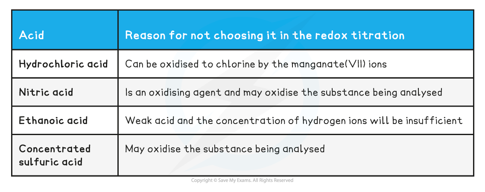
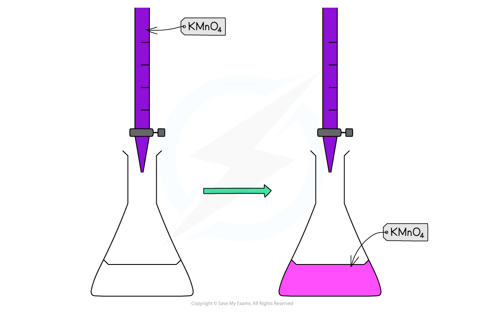
Calculations
From the titre：
\[ n(\ce{MnO4^-})=cV \]
Use the 1:5 ratio to find n(Fe2+)，then calculate the concentration and mass of the iron-containing substance. Percentage purity：
\[ \%\ \text{purity}=\frac{\text{mass of pure substance}}{\text{mass of impure sample}}\times100 \]
Evaluation
- rinse the flask with distilled water，not with the analyte，so no extra moles of analyte are introduced；
- use a white tile to see the pale-pink endpoint clearly；
- read the burette at eye level and record to the correct resolution；
- do not overshoot the endpoint；
- repeat until two or more titres are concordant；
- manganate(VII) decomposes in light，so use freshly standardised solution where required。
6.2.2 Redox Titration - Thiosulfate and Iodine
Core Practical 13b
Iodine is reduced by thiosulfate：
\[ \ce{I2 + 2S2O3^{2-} -> 2I^- + S4O6^{2-}} \]
The iodine solution is usually titrated using sodium thiosulfate and starch. Starch is added near the endpoint，when the solution is pale yellow，because a high iodine concentration can make the starch complex difficult to reverse。
The procedure usually involves adding excess iodide to an oxidising sample，liberating iodine，then titrating the iodine with standard thiosulfate. Use the equation and stoichiometric ratios to determine the amount of oxidising species in the original sample。
Common calculation sequence
- Calculate moles of thiosulfate from
n = cV。 - Use the 2:1 ratio to find moles of
I2。 - Use the reaction equation to find moles of the original oxidising agent。
- Convert to concentration、mass or percentage purity。
Use a conical flask on a white tile，swirl continuously，and add starch only close to the endpoint. If iodine is lost by evaporation or the flask is not stoppered when required，the calculated amount of oxidising agent will be too low。
6.2.3 Transition Metal Complexes
Core Practical 14: preparing a transition-metal complex
The general workflow is：
- calculate the required stoichiometric amounts of metal salt and ligand；
- dissolve the reactants and control pH / temperature；
- mix in the specified order and allow the complex to form；
- cool the mixture if necessary and collect crystals by filtration；
- wash the crystals with a suitable small volume of cold solvent；
- dry to constant mass and calculate percentage yield。
For a complex such as [Cu(NH3)4(H2O)2]2+，the ligand donates lone pairs to the central metal ion through dative covalent bonds. The coordination number、oxidation state and ligand identity should be checked when writing the product formula。
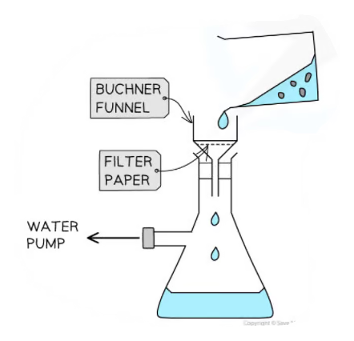
Yield and evaluation
\[ \%\ \text{yield}=\frac{\text{actual mass of dry product}}{\text{theoretical mass}}\times100 \]
Possible causes of a low yield include incomplete reaction、side reactions、loss during transfer / filtration、product remaining dissolved and wet crystals. Drying to constant mass is important because residual solvent gives an artificially high mass。
Safety controls should include goggles、gloves、fume cupboard where ammonia is used、care with hot solutions and appropriate disposal of metal-ion waste。
6.2.4 A-level Qualitative Analysis
Qualitative analysis identifies ions or functional groups from reagent + condition + observation + conclusion. A conclusion should not be based on colour alone；use confirmatory tests where possible。
Positive-ion tests
For ammonium ions，add aqueous sodium hydroxide and warm gently：
\[ \ce{NH4+ + OH- -> NH3 + H2O} \]
Ammonia turns damp red litmus paper blue. Avoid directly smelling the gas；use wafting only when instructed。
Group 2 ions can be compared using ammonia solution、excess sodium hydroxide and excess sulfuric acid：
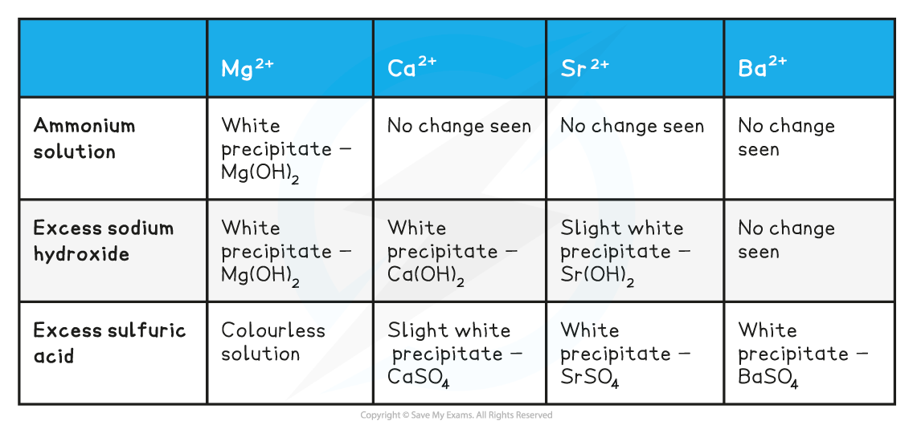

Halide ions
Acidify the sample with dilute nitric acid and add aqueous silver nitrate：
\[ \ce{Ag+ + Cl- -> AgCl(s)} \]
\[ \ce{Ag+ + Br- -> AgBr(s)} \]
\[ \ce{Ag+ + I- -> AgI(s)} \]
Observations：AgCl white，AgBr cream，AgI yellow。Ammonia solubility confirms the identity：AgCl dissolves in dilute ammonia，AgBr dissolves in concentrated ammonia，AgI remains insoluble。
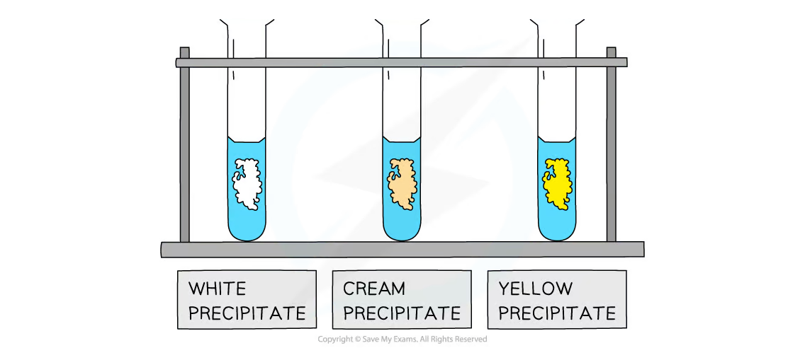
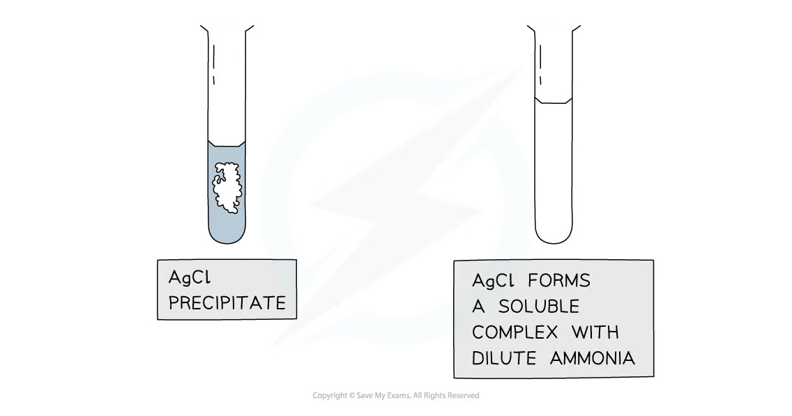
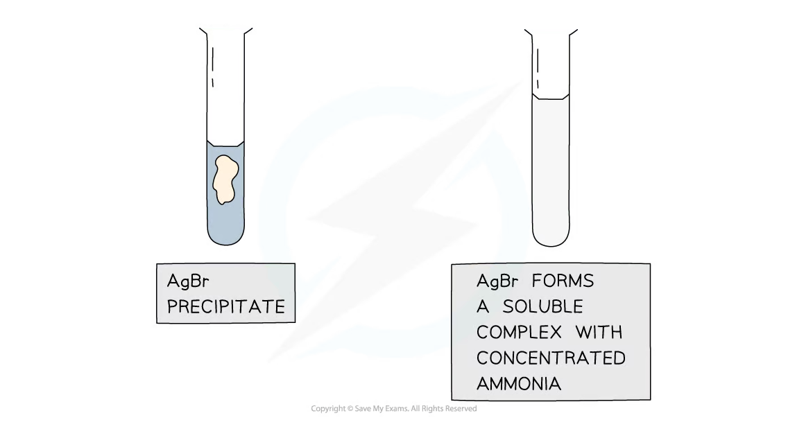
Carbonate and sulfate ions
Carbonate ions react with dilute acid to produce carbon dioxide：
\[ \ce{CO3^{2-} + 2H+ -> CO2 + H2O} \]
Bubble the gas through limewater；a milky precipitate of calcium carbonate confirms CO2：
\[ \ce{CO2 + Ca(OH)2 -> CaCO3(s) + H2O} \]
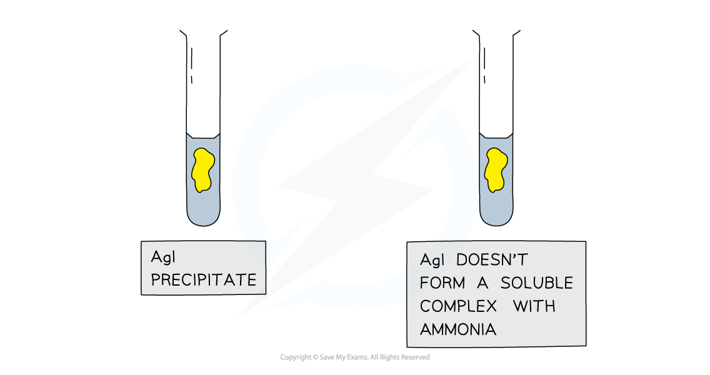
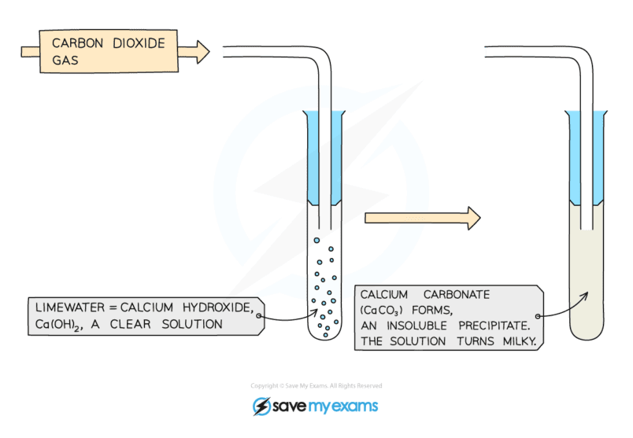
For sulfate ions，acidify with dilute hydrochloric acid and add barium chloride：
\[ \ce{Ba^{2+} + SO4^{2-} -> BaSO4(s)} \]
The white barium sulfate precipitate is insoluble in dilute acids。

Organic functional-group tests
Alkene：bromine water is decolourised because bromine adds across the C=C bond。

Aldehyde / ketone：2,4-DNPH gives an orange precipitate with a carbonyl compound。
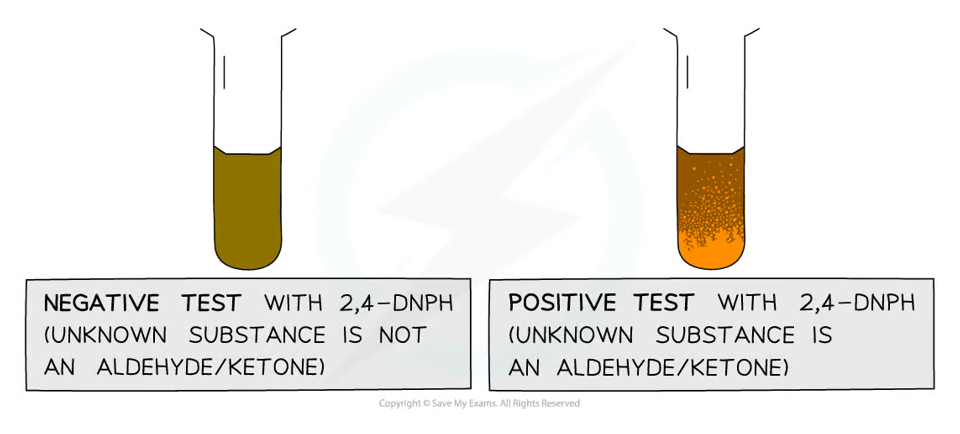
Aldehyde：Tollens reagent gives a silver mirror；the aldehyde is oxidised to a carboxylic acid / carboxylate。
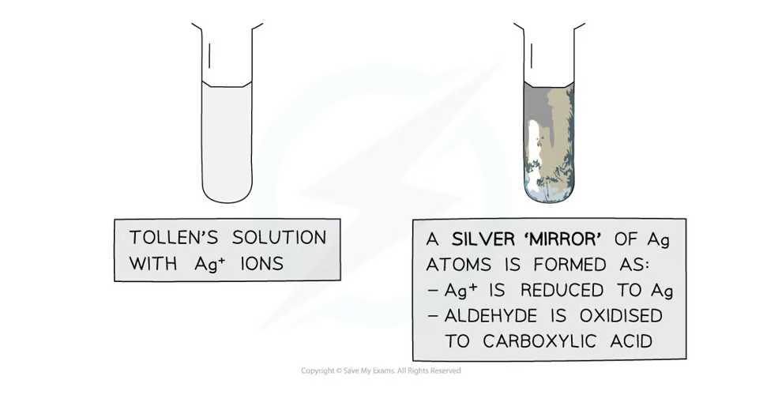
Fehling’s solution gives an opaque red precipitate of copper(I) oxide with an aldehyde；a ketone gives no positive result under these conditions。

Transition-metal ions can also be identified from characteristic colours and changes in oxidation state：
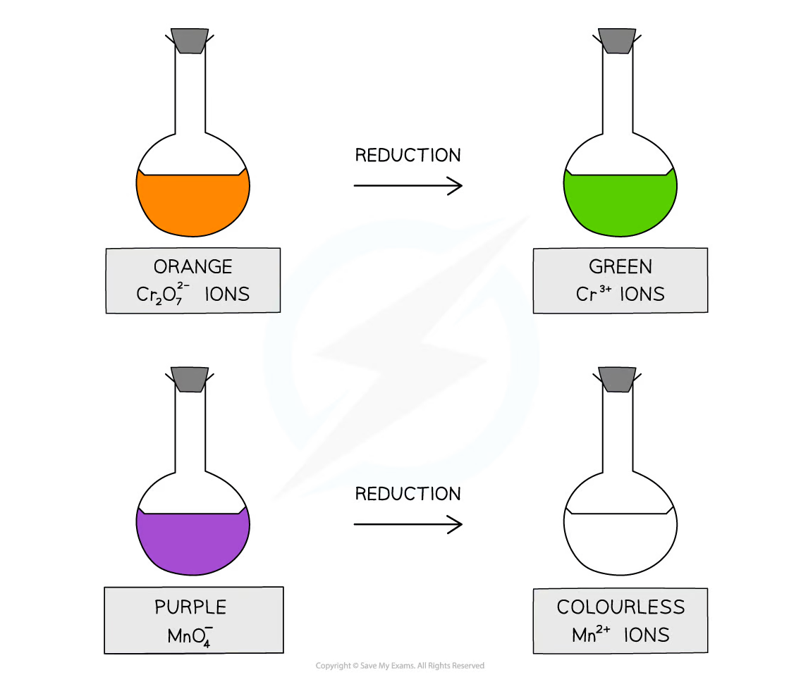
6.2.5 Aspirin Preparation
Core Practical 16
Aspirin（2-acetoxybenzoic acid）is prepared by reacting salicylic acid with ethanoic anhydride，using an acid catalyst：
\[ \ce{C7H6O3 + (CH3CO)2O -> C9H8O4 + CH3COOH} \]
The reaction mixture is heated in a hot-water bath，then aspirin is isolated by cooling、recrystallisation and suction filtration。
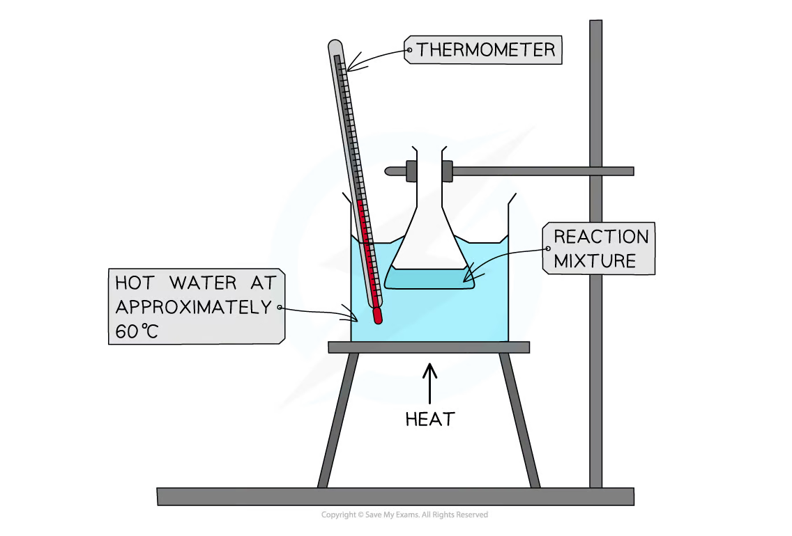
Recrystallisation and Buchner filtration
- Dissolve the crude product in the minimum volume of hot solvent。
- Filter hot if insoluble impurities remain。
- Allow the filtrate to cool slowly so purer crystals form。
- Cool in ice if necessary，then collect crystals using a Buchner funnel。
- Wash with a small amount of cold solvent and dry thoroughly。

Percentage yield：
\[ \%\ \text{yield}=\frac{\text{mass of purified aspirin}}{\text{theoretical mass}}×100 \]
Losses can occur through incomplete reaction、transfer、filtration and solubility of aspirin in the cold solvent. Too much solvent gives a low recovery because more product remains dissolved。
Melting-point purity test
Pure aspirin has a sharp melting point close to the accepted data-booklet value. Impurities usually lower and broaden the melting range。Use a small, dry, finely powdered sample packed into a melting-point tube。
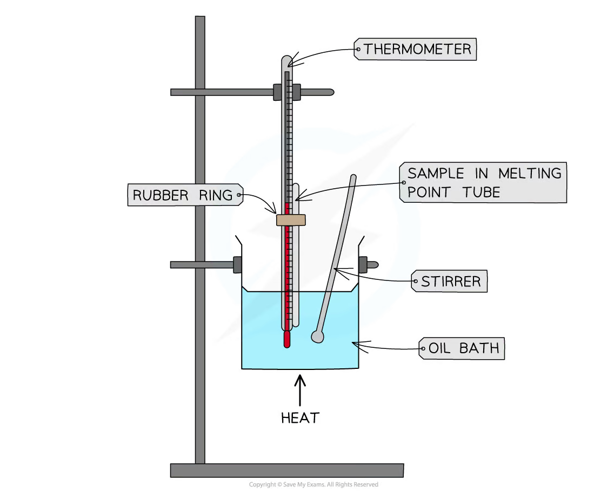
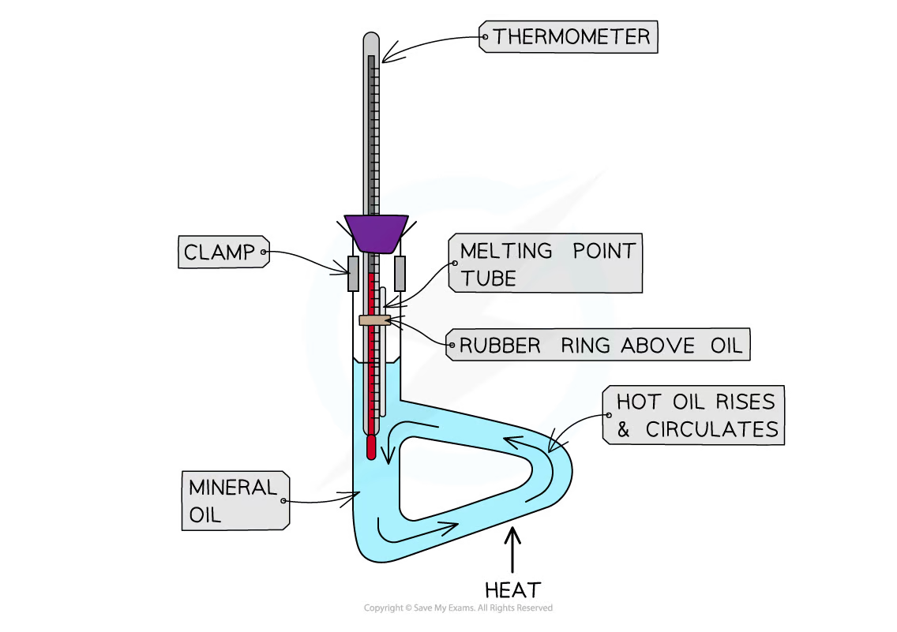
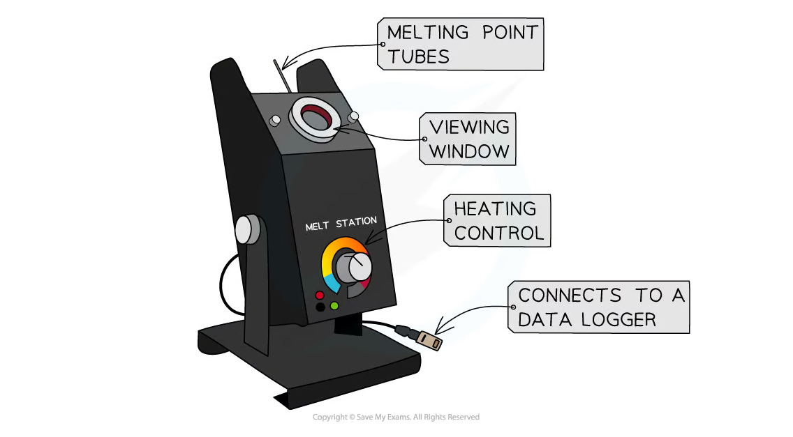
Record the temperature when the first liquid appears and when the sample is completely liquid. Heat slowly near the expected melting point to reduce temperature lag and overshoot。
Data, uncertainty and safety
Practical-answer structure
Every practical answer should identify reagent、condition、observation、equation and conclusion. Include units in all titre、mass、volume、temperature and EMF readings；show one sample calculation；repeat measurements where possible。
Common errors and improvements
- endpoint overshoot: add dropwise near the endpoint and use a white tile；
- contaminated glassware or electrodes: rinse with the correct solution and use clean equipment；
- product loss: use quantitative transfer and minimum cold wash solvent；
- wet crystals: dry to constant mass before calculating yield；
- impure product: recrystallise and compare melting range with the accepted value；
- unsafe volatile / corrosive reagents: use a fume cupboard、goggles、gloves and suitable waste containers。
Exam checklist
Source note
本页面对应：Note per Chapter/Note per Chapter/6.2 Advanced Inorganic - Organic Chemistry Core Practicals.pdf.pdf。页面中的 apparatus、tables、test observations 和 purification diagrams 均从该 PDF 的内嵌图像独立提取并保存到 assets/notes/advanced-inorganic-organic-core-practicals/。